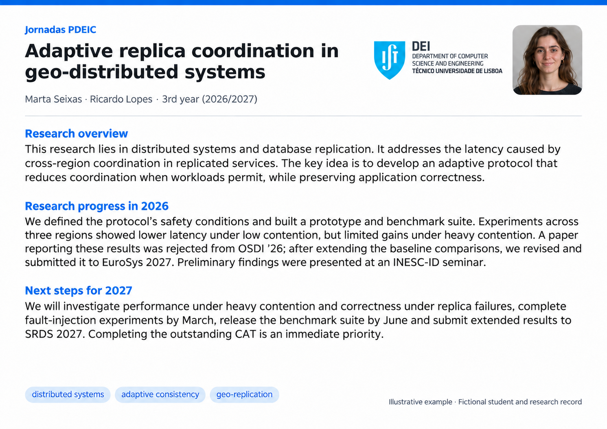

Public, with authorization
Only the research title, research units, keywords and public abstract will be published on the Jornadas website, subject to the student’s authorization.
PREPARE FOR DECEMBER 11
One report, prepared together. Students provide the information; one supervisor reviews and endorses it. PhDMS generates the presentation slide.
At the Jornadas, the presenting supervisor will give a two-minute overview of the student’s research, scientific progress in 2026 and plans for 2027, followed by 1½ minutes of questions and discussion.
PhDMS will automatically generate the slide from the report prepared by the student and reviewed by a supervisor. You do not need to design or upload a separate slide.

This research lies in distributed systems and database replication. It addresses the latency caused by cross-region coordination in replicated services. The key idea is to develop an adaptive protocol that reduces coordination when workloads permit, while preserving application correctness.
We defined the protocol’s safety conditions and built a prototype and benchmark suite. Experiments across three regions showed lower latency under low contention, but limited gains under heavy contention. A paper reporting these results was rejected from OSDI ’26; after extending the baseline comparisons, we revised and submitted it to EuroSys 2027. Preliminary findings were presented at an INESC-ID seminar.
We will investigate performance under heavy contention and correctness under replica failures, complete fault-injection experiments by March, release the benchmark suite by June and submit extended results to SRDS 2027. Completing the outstanding CAT is an immediate priority.
All dates are in 2026. The report moves to supervisor review after the student submits their part.
Open PhDMS ↗Discuss your progress and plans with your supervisor, then complete the report in PhDMS by November 25. Update your PhDMS profile photograph if necessary; it will be used on the slide.
Your answers support the presentation, an optional public research summary, and progress monitoring by the PDEIC coordination. Preparing this information yourself keeps the workload for supervisors as low as possible.
Write short paragraphs that colleagues outside your area can understand. The text fields have length limits, shown directly in PhDMS. Be specific about results, publications and other activities. Setbacks can be included: state submission, acceptance, rejection or resubmission status accurately, and explain what changed or was learned. Mention the CAT as an upcoming milestone if it is still outstanding.
The confidential feedback is visible only to the PDEIC coordinator, not to supervisors. Once your part is ready, submit it in PhDMS to advance the report to supervisor review.
Only one member of the supervisory team needs to review and submit the report. We recommend that this be the member who will present at the Jornadas.
The student prepares the supporting information so your work can focus on review, a brief assessment and the presentation.
Only the research title, research units, keywords and public abstract will be published on the Jornadas website, subject to the student’s authorization.
The slide and photograph will be displayed during the event and will never be published publicly. Presenters can access their slides beforehand in PhDMS.
Scientific outputs, academic status and the supervisor’s progress comment support progress monitoring, not website publication. The student’s confidential feedback is visible only to the PDEIC coordinator.
The generated slides will be available to presenters in PhDMS before December 11. The PDEIC coordinator will project all slides in schedule order, so presenters do not need to bring a computer.
If no member of the supervisory team can present, contact the coordination team to propose a substitute. If no alternative is nominated or attends, the PDEIC coordinator will present the slide. Remote presentation via Zoom is available where requested and arranged in advance.
Questions about the report or presentation arrangements?
Contact the PDEIC coordination team ↗